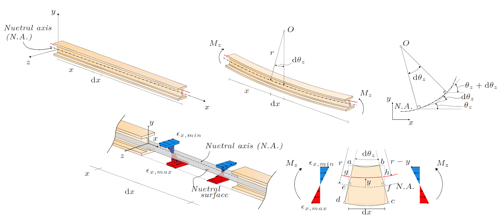
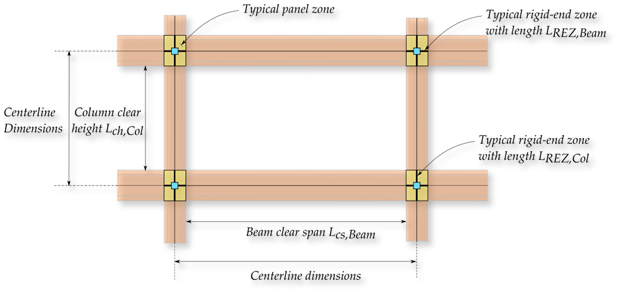
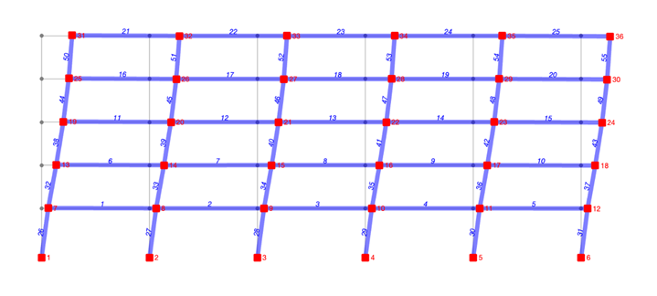
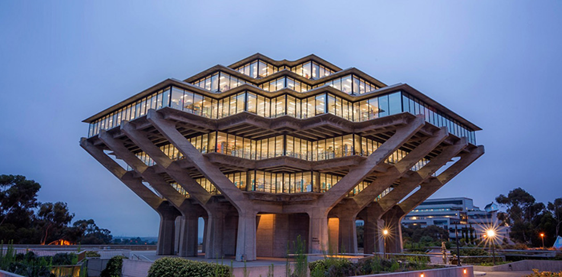
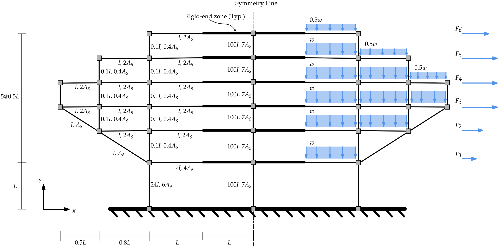
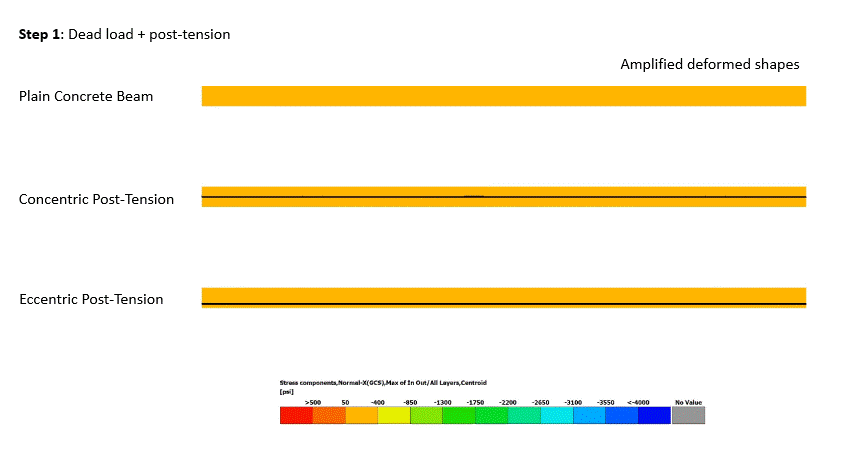
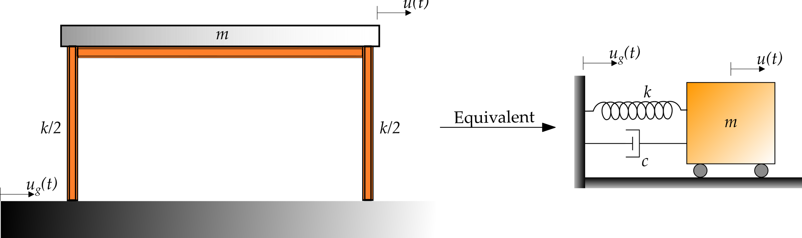
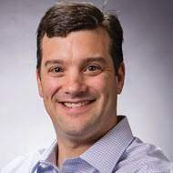

Teaching
Teaching · Advanced structural analysis · Design of reinforced concrete · Design of prestressed concrete · Structural Dynamics and Vibrations · Student Seminars · Anonymous comments from students
We educate the next generation of diverse structural engineering students focusing on the fundamentals of structural analysis and structural design.
We promote enhanced learning through hands-on experience using physical and computational tools developed to meet the educational needs of structural engineering students.

Teaching
Georgios Tsampras serves as instructor of the following courses in the Department of Structural Engineering at UC San Diego:
- Advanced structural analysis (Graduate)
- Structural Dynamics I (Graduate)
- Structural Dynamics II (Graduate)
- Design of reinforced concrete (Undergraduate)
- Design of prestressed concrete (Undergraduate)
- Structural Mechanics III: Vibrations (Undergraduate)
Advanced structural analysis
Graduate course description
Application of advanced analytical concepts to structural engineering problems. Analysis of frame structures using matrix methods and introduction to the finite element method. Displacement-based and force-based beam element formulations. Development of computer programs for structural analysis. Computational applications using MATLAB and Python scripting languages.
- SE 201A, Fall 2020, TA: Sergio Godinez, 58 students
- SE 201A, Fall 2021, TA: Carlos Mayorga, 57 students




Design of reinforced concrete
Undergraduate course description
Concrete and reinforcement properties. Service and ultimate limit state analysis and design. Design and detailing of structural components.
- SE 151A, Winter 2026, TA: Yeon Lee, 158 students
Design of prestressed concrete
Undergraduate course description
Mechanical properties of concrete and reinforcing material including creep, shrinkage, and stress relaxation. Concept and application of prestressed concrete. Analysis and design of prestressed concrete structures and components including continuous beams and composite construction. Calculation of deflection and prestress losses.
- SE 151B, Spring 2021, TA: Amanpreet Singh, 40 students
- SE 151B, Spring 2022, TA: Taylor Walsh, 47 students
- SE 151B, Spring 2023, TA: Kaixin Chen, 35 students
- SE 151B, Spring 2025, TA: Samuel Gan, 68 students
- SE 151B, Spring 2026, TA: Yeon Lee, 69 students
- SE 151B, Spring 2027, TA: None (upcoming)

Structural Dynamics and Vibrations
Course descriptions
Structural Dynamics I and Mechanical Vibrations:
Introduction to structural dynamics. Free vibration of linear elastic single-degree-of-freedom systems and their response to harmonic and periodic excitations, step and pulse excitations, and arbitrary excitations. Numerical evaluation of the dynamic response of linear elastic systems. Laboratory hands-on activities that reinforce the fundamental concepts of structural dynamics. The hands-on activities include: (1) small-scale experiments, (2) data collection, (3) data processing and (4) interpretation of structural behavior. Introduction to linear elastic multi-degree-of-freedom systems, and their natural vibration properties.
- SE 101C Vibrations, Summer 2021, 16 students
- SE 203 Structural Dynamics I, Winter 2022, TA: Carlos Mayorga, 61 students
- SE 101C Vibrations, Summer 2022, 9 students
- SE 203 Structural Dynamics I, Winter 2023, TA: Carlos Mayorga, 43 students
- SE 203 Structural Dynamics I, Winter 2024, TA: Kaixin Chen, 60 students
- SE 203A Structural Dynamics I, Winter 2025, TA: None, 62 students
- SE 203A Structural Dynamics I, Fall 2025, TA: None, 92 students
- SE 203A Structural Dynamics I, Fall 2026, TA: None, 103 students

Structural Dynamics II:
Structural dynamics of multi-degree-of-freedom systems with emphasis on earthquake response of buildings. Damping in structures. Numerical methods for the computation of vibration properties. Dynamic analysis and response of linear elastic systems. Numerical evaluation of the dynamic response of linear and nonlinear systems. Earthquake analysis and response of buildings. Laboratory hands-on activities that reinforce the fundamental concepts of structural dynamics. The hands-on activities include: (1) small-scale experiments, (2) data collection, (3) data processing and (4) interpretation of structural behavior.
- SE 207 Structural Dynamics II, Spring 2023, TA: Kaixin Chen, 32 students
- SE 203B Structural Dynamics II, Spring 2025, TA: None, 32 students
Student Seminars

Anonymous comments from students
“Professor Tsampras is one of the best lecturers I have ever had so far.”
“It’s (the class SE 203) helpful for our career”
“Very useful and practical course (SE 203)”
“Being able to connect concepts mathematically to real-world examples to further understanding. The professor took an extreme amount of care and time in trying to connect concepts to students who didn't understand a topic immediately, using several different ways to explain before continuing the lecture.”
“Seeing the overall concepts when for example experiments were brought to class was helpful. Seeing the matlab simulations of the graphs when it came to free vibration was helpful too. I liked how there was some mention of how some of the theory relates to design. I also liked how there was a shake table visit.”
“Course was presented in an efficient and inspiring manner. Georgios is an outstanding instructor. His notes were excellent.”
“I liked when the professor ties in useful/real-life applications of the theory learned in class. For example, how to measure the damping ratio from a frequency response.”
“The professor really cares about the success of students. Professor and TA are always responsive and ready to help. The content of the course is engaging and encourages the student to put effort into to complete. That helps expand student problem-solving skills and knowledge. Professor tried to make the content of the course applicable to real-life practice and creates a lot of opportunities for students to explore (such as arranging the shake table tour).”
“The notes were well structured which made following along a lot easier. I feel like the professor put in a strong effort to be available outside of class if anything wasn't super clear. Also I feel like the homework's were very good for preparing for examination and the examinations were very reflective of what we learned in the class.”
“Overall, a very caring and helpful professor. I have a slightly different learning style from what is presented, but how he taught for his teaching style was very good.”
“Pro. Tsampras did a great job. The assignments and midterm problems are fun and stimulating.”
“Professor Tsampras is a really good professor. He is easy to get in contact with and understanding of other classes even though he assigns a lot of work. It seems he really wants his students to actually learn the material first and worry about their grade second.”
“Thank you so much for all the effort you put into improving the course Professor Tsampras! It did not go unnoticed, and I really appreciated it. Although this course was kind of painful because of the immense workload, in the end I learned a lot. Happy holidays!”
“He is very helpful and organized and does a great job of teaching the course. He makes a big effort to ensure all students understand and the material and are happy with the course’s structure. He is very accessible as well if help is needed.”
“Love being a student in his class. He is highly available outside of class and office hours and very willing to respond to emails when asked for help. I appreciate the accessibility and helpful attitude in assisting students in understanding the material.”
“The professor really cares about the students understanding the material and encourages us to ask questions during lecture just as much as outside of lecture. He communicates very well with his students. His lectures are more engaging than most other classes I've had to take via zoom. I think he would be a really good in person professor. I liked that he encouraged people to turn on their cameras as well, although I know other students maybe don't have the chance to show their faces during lecture depending on their conditions at home.”
“A great professor who cares a lot about the students.”
“He is very patient with the students and very caring too.”
“Professor Tsampras is a great professor! He is always available to help and provides lots of resources to help the class material. I really appreciated his concern for the students well being and work load. Class examples were helpful and homework prepared well for the midterm exam”
“Very kind and understanding professor. He looks out for student's learning during class and provides support throughout the course. He is willing to adapt and adjust the course based on students' needs.”
“Fantastic professor, a highlight of the masters program at UCSD.”
“His commitment to the student's engagement with the material was much appreciated!”
“He really really encourages you to go and ask him questions and made himself available. He is really helpful to his students.”
“Explains things very clearly and is very thorough in descriptions of concepts, derivations, and application.”
“Professor Tsampras, thank you so much for caring for your students and always being available to help and support student learning. I am glad I took this class with you!”
“Really organized professor, and easy to follow.”
“Instructor is very knowledgeable and really shows concern for students' learning.”